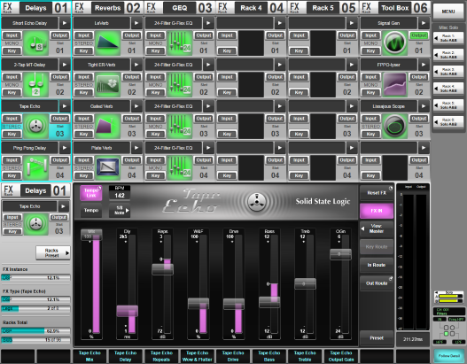
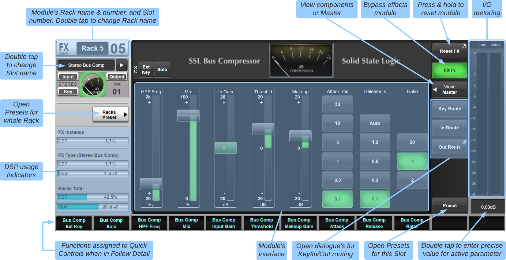

Effects Rack Overview
SSL Live consoles offer a wealth of signal processing in its six effects racks, which can be routed into the insert points of any path type. To open the effects rack page, touch Menu > Effects.
The six racks are displayed as columns. Each rack column has 16 module slots, four of which are visible at a time; swipe to scroll to higher slots.
The maximum number of populated Effects slots available for each console model is indicated below:
| L650 | L550 Plus | L550 | L500 Plus | L500 | L450 | L350 Plus | L350 | L300 | L200 Plus | L200 | L100 Plus | L100 |
|---|---|---|---|---|---|---|---|---|---|---|---|---|
| 96 | 60 | 48 | 24 | |||||||||
Each rack and slot has a number, for example 3-4 is rack 3 slot 4. Touch a slot to select it to the detail area:

To rename a rack, double-tap the box in its header. These names will be displayed in the routing menus for easier identification.
Loading Effects Modules Into Racks
Any effect can occupy any slot, but we recommend you develop a workflow that gives each rack a common purpose, such as keep reverbs and delays in one rack, dynamics in another, and master processing in another, etc.
To add or change an effect slot:
- Touch the arrow in the slot.
- Choose the effect's format, such as Mono, Stereo, LCR, etc.
- Choose the type category, then choose the specific effect.
To name the slot, simply double tap on the effect name and use the popup keyboard to enter your own name. These names will be displayed in the Routing View when routing to or from the Effects Rack, to facilitate routing the correct effect. Note that only slots with effects loaded can be named.
Note: The module controls in the left side of the FX Detail View can also be used to populate and name the currently selected slot. Note: The Recent submenu gives you quick access to the 10 last used effect modules (including format) for adding multiple instances of the same effect.Effects Detail View
On the left is the rack and slot number, and user-defined name.
Cursor keys navigate to other racks and slots.
Meters on the right display the effect's input and output level.

Holding Reset FX resets back to default settings.
Press View and use the drop-down to choose whether you are viewing the global controls for all legs of a multi-channel effect (Master), or one of the individual components.
To enter a precise numerical value, first touch the parameter on-screen, then double-tap the numerical box below the meters.
If the DSP usage graphs (bottom left) are nearing 100%, you may want to reconfigure the slots to free up processing power. Or consider the processing that is built into all full path types!
The DSP usage indicators in the lower left of the screen provide a visual indication of the amount of processing currently in use:
- FX Instance DSP: Total amount of FX processing used by the selected module
- FX Type DSP: Total amount of FX processing used by all instances of the selected effect type
- FX Type Legs: Number of instances of the effect type used
- Racks Total DSP: Total amount of processing used by all modules in the Effects Rack
- Racks Total Slots: Number of FX rack slots used
Routing Effects to Path Inserts
Note: effects slots/modules can be formatted as mono, stereo, LCR etc. This format applies to the effect's input, output and key (if applicable) routes.You can route effects into path inserts using the path's Detail View Insert Routing display, or via the Effects menu (MENU > Effects).
Pressing Route Send will open the Routing View so the Insert send can be routed to the Effect. Tap on the console (begins with "LIVE...") then tap Effects Rack. Now choose the effect, tap Input and press Make or Make All (depending on the format of the effect).
Press & hold Route Return and select the Auto-route option to automatically route the return from the same effect as the send. Alternatively, you can press Route Return once to open the Routing View if the return is not coming from the same effect as the send.
When a path's insert send and return have been routed to an effect, the effect will appear in the path's detail dialogue for that insert point, with full control provided via the channel view screen or the effect rack screen.
Note: For mono, stereo, LCR, 4.0 and 5.1 effects, the format of the effect module should match the format of the channel into which it is inserted. To route all legs of the effect, simply select the module name and press Make in the routing page. Explicitly selecting the L/C/R leg before pressing Make will only route the leg selected.
Routing can also be done from the Effects Rack slot itself. Use the In Route, Out Route and Key Route buttons to open up the appropriate routing pages. This method also allows effects modules to be 'daisy-chained' by routing out of one module and in to another before routing the last module back to a channel.
If routing a single effect to and from an Insert point, make the input route then press & hold the Out Route button and select the Auto-route Output option to route the output of the effect to the same Insert point.
See Routing for more information on the routing pages.
Using Stems as FX Channels
For Reverbs and Delays, the traditional Aux Send > Effect > Channel Return workflow is perfectly possible on SSL Live consoles. However, can be advantageous to use Stems as Effects Channels.
In this workflow:
The send to the Stem is the FX send.
The Effect is inserted on one of the Insert points on the Stem.
The Stem's fader acts as the FX return.
There are many advantages to this workflow:
- The Effect is easily accessible from the Insert section of the Stem's Detail View.
- The FX send and return are all in one path, which means fewer faders to worry about, and lower DSP usage.
- Stems have far more feed point options than Auxes.
Routing from the effect's output to the Channel's Input will mean that adjustments to the effect's parameters can only be done by returning to the Effects Rack page.
Effects Presets
Effects can have their settings stored as presets. Presets can be saved for individual effects or the entire rack.
Presets are loaded and saved in the same way as showfiles.
To access a preset, load an effect and then touch Preset in the bottom right of the detail dialogue.
Use the SSL Presets button to access factory presets for the effects module that is currently displayed. These presets provide a useful starting point for common use cases (e.g. drum or vocal reverbs). Note that not all effect types will have SSL presets available.
To access the preset list for the entire rack, touch Racks Preset in the detail dialogue. Rack presets include the type and format of all effects modules in the entire Effects Rack. Loading a rack preset will replace all existing modules with those from the preset file. If overwriting existing module(s) of the same format, the routing to and from the effects rack slot(s) will be preserved.
Effects Units
Information on individual effects units can be found here:
- Delay Modules
- Dynamics Modules
- EQ Modules
- Modulation Modules
- Reverb Modules
- 'Other' Modules
- Audio Tools
- Automix: Auto Gain
Useful Links
Detail ViewIndex and Glossary